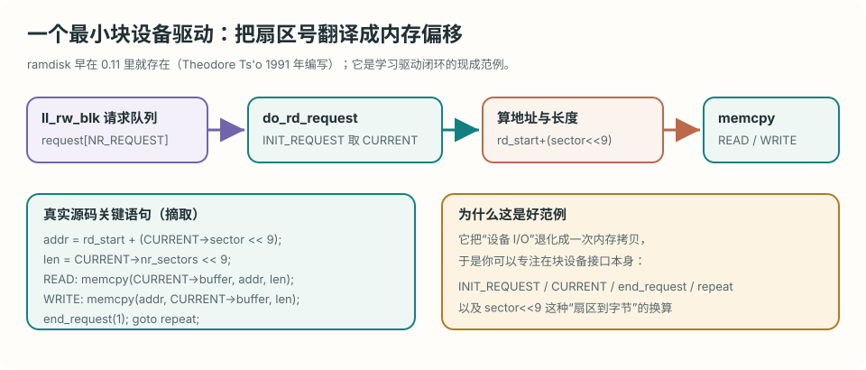
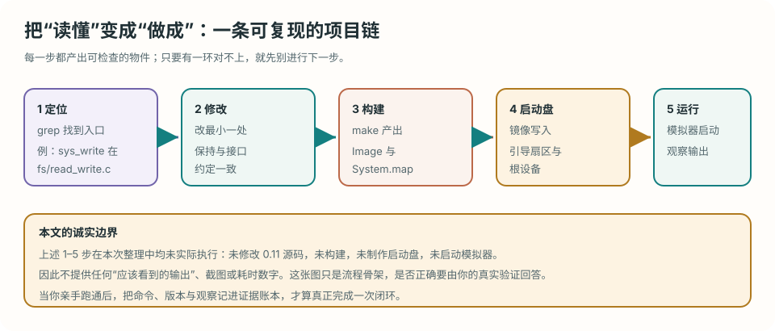

综合项目：从 ramdisk 到完整开发流程
把读过的机制变成作品：先以一个已经存在的驱动为范例看清块设备闭环，再走一遍“修改 → 构建 → 启动 → 观察”的全流程，并明确哪些步骤本章并未实际执行。
实践 · ramdisk / 构建流程 / RTFSC把机制串成一个可完成的项目
读到最后一章，你手里已经有一束机制：引导、页表、中断、系统调用、调度、文件系统、块设备与字符设备。真正把它们连起来的方式不是再读一遍，而是做成一个小东西，并能亲自验证它。本章分两部分：先用一个已经存在的驱动做范例，再给出从修改源码到在模拟器中观察的完整流程——每一步都标清楚本章是否实际执行。
现成范例：ramdisk 驱动的请求闭环
很多人以为“写 ramdisk 驱动”是一项从零开始的任务，但 kernel/blk_drv/ramdisk.c 在 0.11 里已经存在（文件头注明由 Theodore Ts'o 于 1991 年 12 月编写，第 20 章已按原版审校）。它把设备 I/O 退化成一次内存拷贝，因而是理解块设备接口本身的最好起点。
addr = rd_start + (CURRENT->sector << 9);
len = CURRENT->nr_sectors << 9;
if ((MINOR(CURRENT->dev) != 1) || (addr+len > rd_start+rd_length)) {
end_request(0);
goto repeat;
}
if (CURRENT->cmd == WRITE)
memcpy(addr, CURRENT->buffer, len);
else if (CURRENT->cmd == READ)
memcpy(CURRENT->buffer, addr, len);
end_request(1);
goto repeat;值得记住的不是这几行本身，而是它把“扇区号”翻译成“内存偏移”的方式：sector << 9 就是扇区号乘以 512 字节。INIT_REQUEST、CURRENT、end_request、repeat 是块设备层的公共约定，硬盘、软盘与 ramdisk 共用它们。把这个骨架与第 19、20 章对照，一个块设备驱动的边界就完整了。

完整开发流程
一个内核改动从想法到可观察的结果，要经过五个阶段。每一步都产出可检查的物件；发现对不上就停下，不要往下叠加。
# 1. 定位：先确认要改的函数在哪个文件
grep -rn 'do_rd_request\|sys_write' kernel fs
# 2. 修改：保持接口与调用约定不变
# 3. 构建：原版 Makefile 的 all 目标产出 Image
make
# 4. 写入启动盘（路径与设备名依你的环境）
# 5. 启动模拟器并观察 printk 或调试器输出本次整理的边界：上面五步均未实际执行——未修改 0.11 源码、未构建、未制作启动盘、未启动模拟器。因此本文不提供任何“应该看到的输出”、截图或耗时数字。流程骨架能帮你少走弯路，但“能不能跑”只能由你自己的真实构建与运行回答。

小项目建议与 procfs 说明
三个可完成且能验证的小项目，按难度排列：
- 加一个最小系统调用：按第 25 章的四处改动加入
sys_hello，再用第 24 章的 QEMU + GDB 在_system_call处确认调用号。闭环小而完整。 - 给 ramdisk 加计数：在
do_rd_request里分别统计读与写次数，并用printk输出。它会强迫你想清楚“在哪里加才不破坏请求闭环”。 - 跟一次启动：从引导扇区到
main()下几个断点，把第 4–6 章的跳转亲自走一遍。
为什么“ramdisk 驱动”不是从零开始的任务？（展开核对）
因为 0.11 已自带 kernel/blk_drv/ramdisk.c，它实现的就是完整的读/写请求闭环。更值得做的是读懂它、或在它上面做小改动（例如加计数），而不是重写一份同样的代码。
只读验证与正确边界
不修改任何文件，先确认范例与工具链入口存在：
grep -n 'do_rd_request\|INIT_REQUEST\|end_request\|sector << 9' kernel/blk_drv/ramdisk.c
grep -n 'rd_init\|MAJOR_NR' kernel/blk_drv/ramdisk.c
grep -n 'all:\|tools/system\|Image' Makefile
ls include/linux/sys.h kernel/system_call.s include/unistd.h预期分别找到请求处理函数、主设备号定义、all: Image 与 tools/system 依赖，以及第 25 章需要的四个文件。这是源码静态实验；本章未编译、未启动模拟器，因此不声称任何项目已经跑通。
原始资料与旅程收尾
- kernel/blk_drv/ramdisk.c：do_rd_request、rd_init、请求闭环。
- kernel/blk_drv/blk.h：INIT_REQUEST/CURRENT/end_request 宏。
- Makefile：all → Image、tools/system 与 System.map。
- include/linux/sys.h 与 include/unistd.h：加系统调用所需的声明、分派表与编号。
课程到这里结束，但 RTFSC 没有终点。带着两个习惯离开：其一，任何断言都问一句“哪个版本的哪一行”；其二，没亲自跑过的结果就写“未验证”。这两条比多背几个函数名更有用。